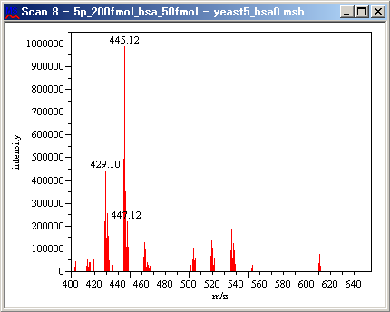

While a spectrum is active, select [Processing] in the menu bar and then select [Peaks] > [Detect Peaks] from the drop down menu.
The Detect Peaks dialog appears.
The Detect Peaks dialog can also be displayed by clicking the
 icon in the toolbar.
icon in the toolbar.
Select the peak detector and charge detector from the drop down lists.
Enter the peak filter settings so that only the necessary peaks will be detected.
Click the icon.
The dialog appears.
Select the method and set the parameters.
- Method:
- Height Threshold
The peaks with intensity lower than the threshold will be excluded from the target of peak detection.
Select [Absolute] or [Relative%] and enter the threshold value.
When [Relative%] is selected, enter a value between 0 and 100.
Click [OK].
- m/z Range
Only the peaks located in the specified m/z range will be detected.

Enter the start and end m/z values to specify a range.
Click [OK].
- Elimination List
The peak at the specified m/z value will be excluded from the peak list.

Click the icon in the Elimination List dialog.
The dialog appears.
Enter the m/z value of the peak of an unwanted foreign substance, and enter comment if necessary.
Click [OK].
Repeat steps A-C to enter other m/z values.
Click [Export] to save the elimination list in a file.
Click [Import] to load the elimination list from a file.
Click the
 icon to edit the selected item.
icon to edit the selected item.Click the
 icon to remove the selected item.
icon to remove the selected item.
- Number of Peaks
The peaks with top intensity or area will be detected to the specified number.

Select [Intensity] or [Area] and enter the number.
Click [OK].
Repeat steps 1-2 to enter other conditions.
Click [Export] to save the filter setting in a file.
Click [Import] to load the filter setting from a file.
Click the
icon to edit the selected method.Click the
icon to remove the selected method.
Click [Detect].
The m/z value of each detected peak appears.

While a chromatogram is active, select [Processing] in the menu bar and then select [Peaks] > [Detect Peaks] from the drop down menu.
The Detect Peaks dialog appears.

The Detect Peaks dialog can also be displayed by clicking the
icon in the toolbar.
Set the parameters.
Click [Detect].
The RT value of each detected peak appears.

While a heatmap is active, select [Processing] in the menu bar and then select [Peaks] > [Detect Peaks] from the drop down menu.
The Detect 2D Peaks dialog appears.
The Detect 2D Peaks dialog can also be displayed by clicking the
icon in the toolbar.
Set the parameters.
Click [Detect].
Clicking [Test] starts peak detection only in the area currently displayed. You can quickly check if the parameters you have set work as expected.
Peaks are marked in cyan and clusters are marked in green.